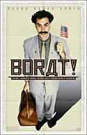
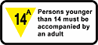

Movies.ca

- What the critics think
- What the public thinks
- What you think (poll, forum)
- Box office details
- Official website
Full review
Coarse language, mature theme, nudity
Another Cinema: 7:15 - buy tickets, 9:35 - buy tickets; no passes
| London Movies.ca |
|
|
|---|---|---|
| - Movie trailer - What the critics think - What the public thinks - What you think (poll, forum) - Box office details - Official website |
 | Borat: Cultural Learnings of America for Make Benefit Glorious Nation of Kazakhstan |
| Comedy: Borat Sagdiyev (Sacha Baron Cohen), Kazakhstan's sixth-most-famous man -- a leading journalist from the state-run TV network -- makes a journey to learn about American life. Accompanied by his obese producer, Borat chases unsuspecting New Yorkers on the subway and streets for kisses -- the traditional greeting in his homeland. Plans for the documentary change when Borat encounters -- on a late night rerun -- his true love, C. J. Parker, the character played by Pamela Anderson on TV's Baywatch. Planning to marry this goddess Kazakhstani-style (which involves a burlap bag), he tricks his producer into travelling to Los Angeles. They rip across America in an ice-cream truck, leaving behind a wake of freaky and explicit mayhem. Full review |
||
|  | Ontario Film Review Board content advisories: Coarse language, mature theme, nudity |
|
| Showtimes | for Nov. 8: | SilverCity London: 12:30*, 2:45*, 5:10*, 7:15, 7:50*, 9:35, 10:20*; no passes, digital, (* denotes RWC/DVS available) Another Cinema: 7:15 - buy tickets, 9:35 - buy tickets; no passes |
| Previous day | Next day | ||